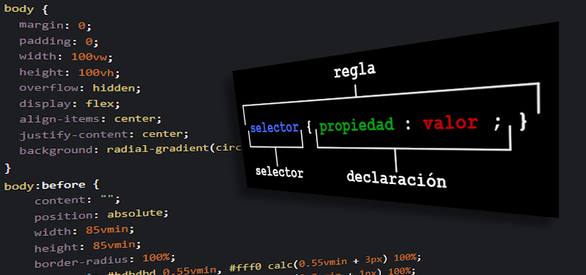
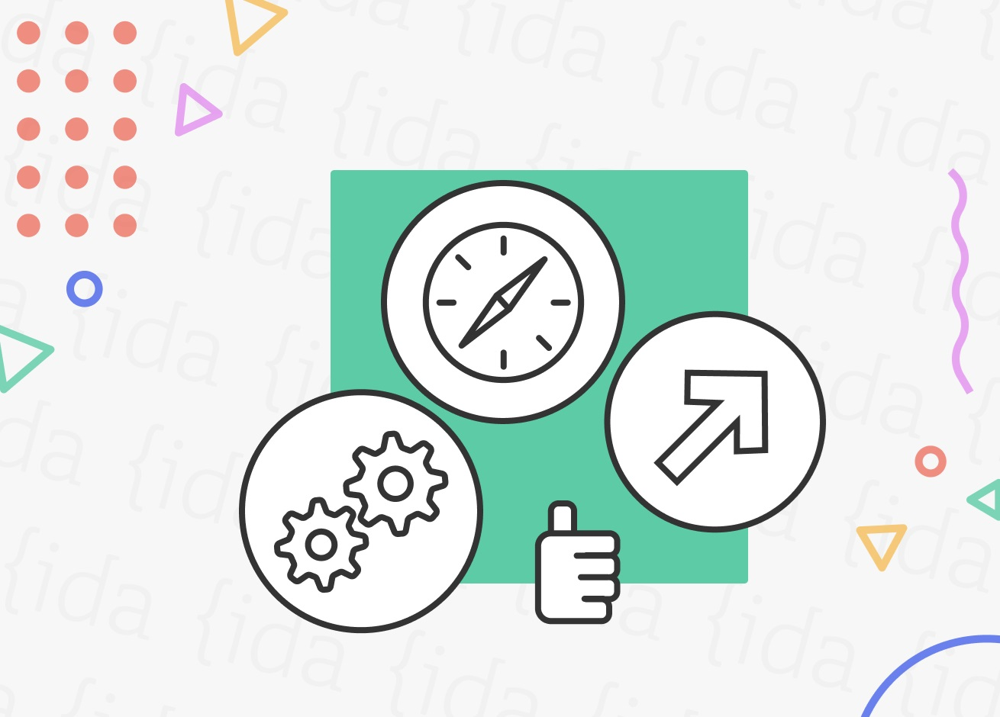
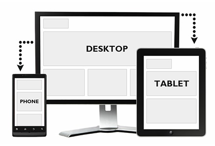

Consistencia y mantenbilidad
Consistencia y mantenbilidad
|  Separación de estructura y presentación |
Consistencia y mantenbilidad |
 Eficiencia en el rendimiento |
|---|---|---|
| Mantiene el HTML y limpio y separado del diseño, facilitando el mantenimiento y la actualización. | Aplica estilos de manera uniforme en todo el sitio web, simplificando cambios globales. | Almacena estilos en caché, mejorando la velocidad de carga y reduciendo el tráfico entre servidor y cliente. |
|  Flexbilidad y control |
|---|
| Proporciona un control detallado sobre el diseño, adaptable a diferentes dispositivos y pantallas. |
Licenciatura en Sistemas Computacionales© Copyright 2022. Luis Felipe Gutierrez Lopez |